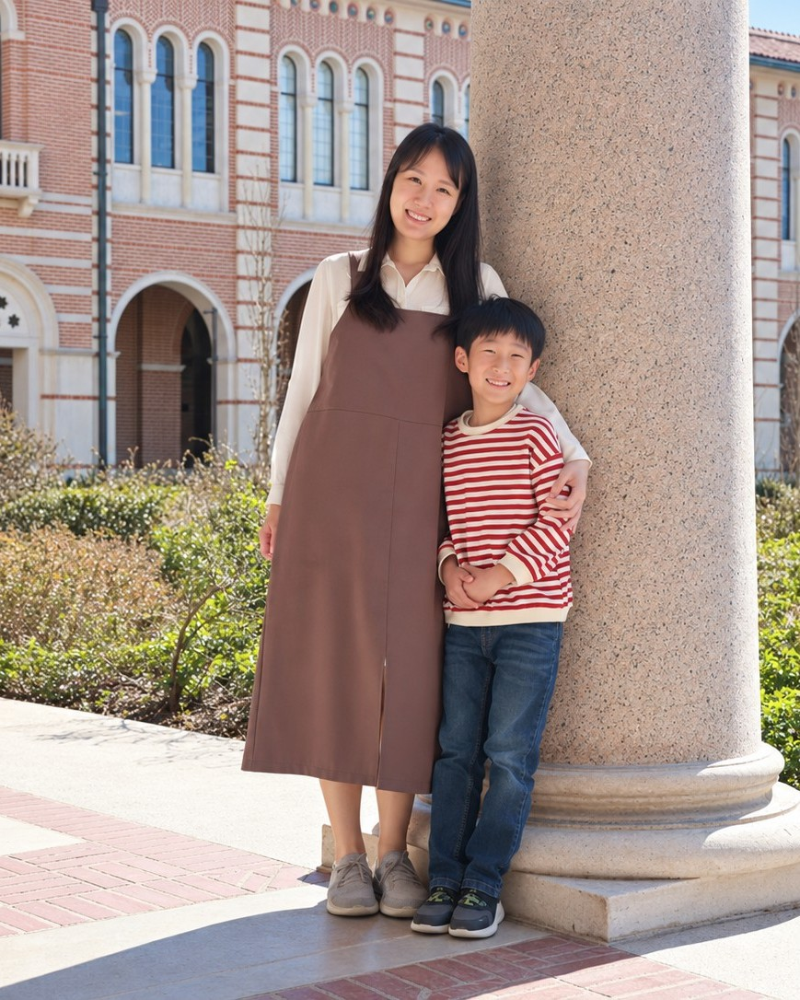

As a new immigrant mother in the United States, I often heard that if my career did not bring immediate financial value, I should focus on being a mother instead. At the same time, I had long dreamed of becoming an academic, a path that required years of investment before any clear return. Pursuing that dream sometimes felt selfish, yet giving it up felt like losing an important part of who I was.
For a time, I struggled with the feeling that being the kind of mother I wanted to be and pursuing the career I wanted might require incompatible versions of myself.
Eventually, that changed. I began to see motherhood not as a barrier to my academic identity, but as a source of questions, perspective, and purpose in my research. More broadly, I started to reinterpret parts of myself that I had once seen as weaknesses, including my immigrant background, noticeable accent, cultural differences, and identity as a mother, as experiences that could become sources of insight and strength.
That shift made me feel less conflicted and more confident in both roles. I became happier with the kind of mother I was becoming and more secure in the kind of scholar I wanted to be.
The identities themselves had not changed. What changed was how I interpret them.
Why is it easier for some people than others to see their identities as compatible? How do unequal social environments shape that difference, and can helping people reinterpret their identities reduce the effects of these inequalities on their well-being and life choices?
I pursue these questions using longitudinal studies, randomized controlled trials, behavioral observation, and qualitative research.